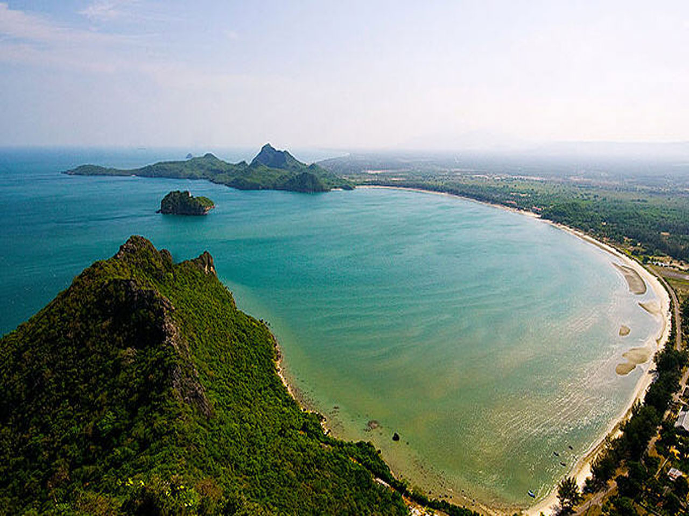
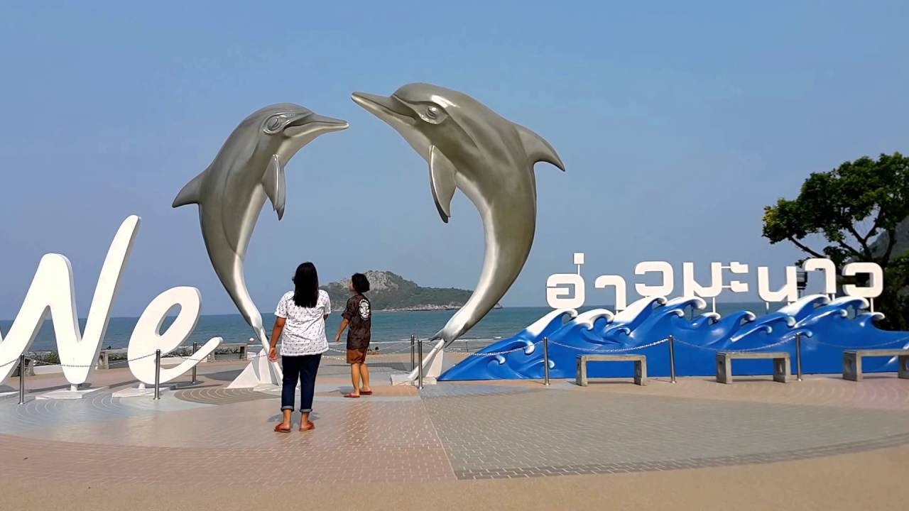
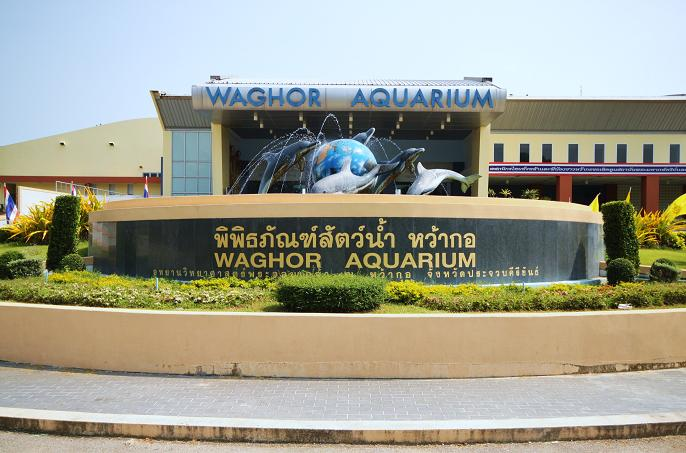
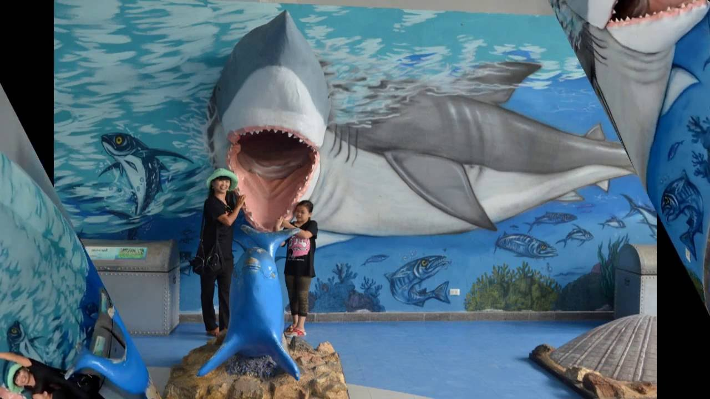

จังหวัดประจวบคีรีขันธ์
คำขวัญประจำจังหวัด
เมืองทองเนื้อเก้า มะพร้าว สับปะรด สวยสด หาด เขา ถ้ำ งามล้ำน้ำใจ
ประวัติจังหวัดประจวบคีรีขันธ์ ประจวบคีรีขันธ์ เป็นจังหวัดในภาคกลางตามการแบ่งการปกครองของประเทศไทย ในขณะที่การแบ่งทางภูมิศาสตร์จัดเป็นจังหวัดในภาคตะวันตก และการแบ่งทางอุตุนิยมวิทยาจัดเป็นจังหวัดภาคใต้ตอนบน จังหวัดประจวบคีรีขันธ์มีประวัติศาสตร์ความเป็นมาไม่ค่อยแน่ชัด เนื่องจากเป็นพื้นที่แคบ ยามมีศึกสงครามยากแก่การป้องกันจึงต้องปล่อยให้เป็นเมืองร้างหรือยุบเมืองเป็นส่วนหนึ่งของเมืองเพชรบุรี ในอดีตเป็นเพียงเมืองชั้นจัตวาเล็ก ๆ ที่รวมกันอยู่ภายใต้การปกครองของเมืองเพชรบุรี พอถึงรัชสมัยพระบาทสมเด็จพระพุทธเลิศหล้านภาลัยจึงได้โปรดเกล้าฯ ตั้ง เมืองบางนางรม ที่ปากคลองบางนางรม แต่ที่ดินไม่เหมาะสมแก่การเพาะปลูกจึงย้ายที่ว่าการเมืองไปตั้งที่เมืองกุย ที่มีความอุดมสมบูรณ์และการตั้งบ้านเรือนหนาแน่นกว่า ครั้นรัชสมัยพระบาทสมเด็จพระจอมเกล้าเจ้าอยู่หัว พ.ศ. 2398 โปรดเกล้าฯ ให้รวมเมืองกุย เมืองคลองวาฬ และเมืองบางนางรมเข้าด้วยกัน โดยที่ตั้งเมืองยังคงตั้งอยู่ที่เมืองกุย (คืออำเภอกุยบุรีในปัจจุบัน) และโปรดเกล้าฯ ให้เปลี่ยนชื่อเมืองกุยเป็น เมืองประจวบคีรีขันธ์ เพื่อให้ชื่อคล้องจองกันกับเมืองประจันตคีรีเขตซึ่งเดิมคือเกาะกงที่แยกออกจากจังหวัดตราด ครั้นถึงรัชสมัยพระบาทสมเด็จพระจุลจอมเกล้าเจ้าอยู่หัว พ.ศ. 2441 จึงย้ายเมืองมาอยู่ที่บ้านเกาะหลัก ต่อมาพระองค์ทรงจัดการปกครองแบบมณฑลเทศาภิบาล เมืองประจวบคีรีขันธ์ เมืองชั้นจัตวาซึ่งขึ้นตรงกับเมืองเพชรบุรี มีฐานะเป็นอำเภอเมืองประจวบคีรีขันธ์ สังกัดเมืองเพชรบุรี ในช่วงนี้เมืองปราณบุรีซึ่งมีอาณาเขตติดอำเภอเมืองประจวบคีรีขันธ์ด้านทิศเหนือและเคยมีฐานะเป็นเมืองชั้นจัตวาขึ้นกับเมืองเพชรบุรี ก็ได้จัดตั้งเป็นอำเภอเมืองปราณบุรี สังกัดเมืองเพชรบุรีด้วย ส่วนเมืองกำเนิดนพคุณขึ้นตรงกับเมืองชุมพร ด้วยมีพระราชดำริสงวนชื่อเมืองปราณไว้ (เมืองเก่าที่ตั้งอยู่ที่ปากน้ำปราณบุรี) ต่อมา วันที่ 2 มกราคม พ.ศ. 2449 พระบาทสมเด็จพระจุลจอมเกล้าเจ้าอยู่หัวได้มีพระบรมราชโองการให้รวมเอาอำเภอเมืองปราณบุรี อำเภอเมืองประจวบคีรีขันธ์ เมืองเพชรบุรี และอำเภอกำเนิดนพคุณ เมืองชุมพร ซึ่งเป็นเมืองชั้นจัตวามาก่อน ตั้งเป็นเมืองปราณบุรี มีที่ทำการเมืองอยู่ที่ตำบลเกาะหลัก ในรัชสมัยพระบาทสมเด็จพระมงกุฎเกล้าเจ้าอยู่หัวจึงได้มีการเปลี่ยนชื่อเมืองปราณบุรีเป็นเมืองประจวบคีรีขันธ์ เพื่อป้องกันการสับสนกับเมืองปราณที่ปากน้ำปราณบุรี หลังจากมีการยกเลิกระบบการปกครองแบบมณฑลเทศาภิบาล เมืองประจวบคีรีขันธ์จึงไม่ได้ขึ้นตรงกับเมืองเพชรบุรีและมณฑลราชบุรีอีก
อ่าวมะนาว
เป็นสถานที่ท่องเที่ยวภายในกองบิน 5 เคยเป็นยุทธภูมิในสมัยสงครามโลกครั้งที่ 2 ระหว่างกองทัพไทยและกองทัพญี่ปุ่น มีชายหาดที่สวยระดับ 5 ดาว กิจกรรมการล่องเรือ ยิงธนู และตลุยไปในป่าด้วยรถ atv ทั้งยังมีกิจกรรมการปีนเขาล้อมหมวก แต่ก่อนขึ้นเขาต้องไปสักการะศาลเจ้าพ่อเขาล้อมหมวกเพื่อความเป็นสิริมงคลและบนยอดเขามีรอยพุทธบาทจำลองพร้อมทั้งวิวสวยๆ ของอ่าวมะนาวและอ่าวประจวบฯ

พิพิธภัณฑ์สัตว์น้ำหว้ากอ
สัมผัสกับมหัศจรรย์โลกใต้น้ำ มีทั้งสีสันความสวยงามของสัตว์น้ำหลากหลายชนิด ทั้งน้ำจืดและน้ำเค็มในมิติใหม่ของพิพิธภัณฑ์สัตว์น้ำหว้ากอ ภายในแบ่งพื้นที่เป็น 6 ส่วน คือ ส่วนอัศจรรย์โลกสีคราม, ส่วนจากขุนเขาสู่สายน้ำ, ส่วนสีสันแห่งท้องทะเล, ส่วนเปิดโลกใต้ทะเล, ส่วนพิพิธภัณฑ์สัตว์น้ำและส่วนกิจกรรมปฏิบัติการ 
ข้อมูลติดต่อ
ททท.สำนักงานประจวบคีรีขันธ์
พื้นที่รับผิดชอบ : ประจวบคีรีขันธ์
ที่อยู่ : 39/9 ถ.เพชรเกษม ต.หัวหิน อ.หัวหิน จ.ประจวบคีรีขันธ์
77110
โทร 0 3251 3885, 0 3251 3871, 0 3251 3854
แฟกส์ 0 3251 3898
อีเมล์ tatprachuap@tat.or.th
เว็บไซต์
http://www.tourismthailand.org/prachuapkhirikhan
ข้อมูลผู้จัดทำ
นายอนุวัฒน์ พลอยน้อย รหัส 5596006360